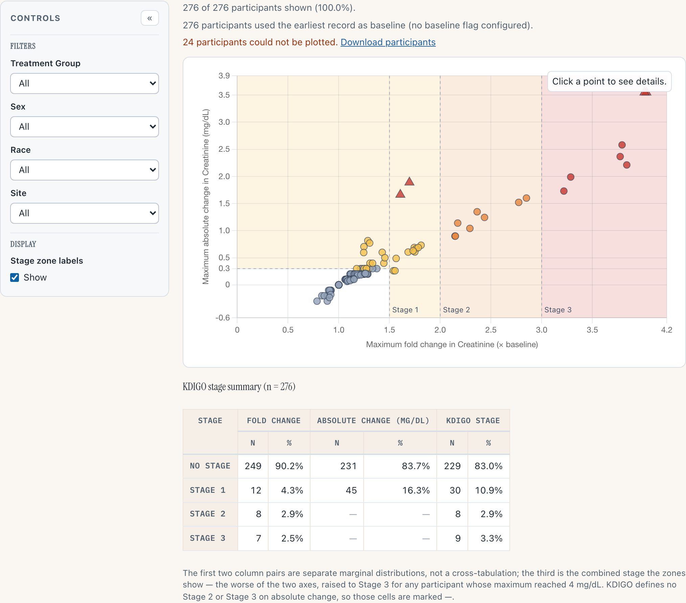
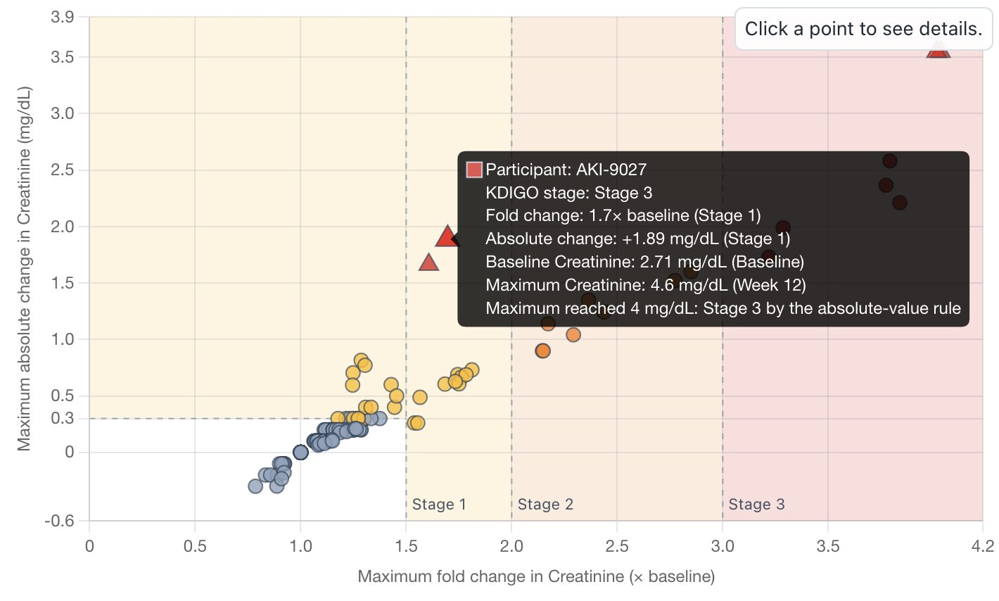
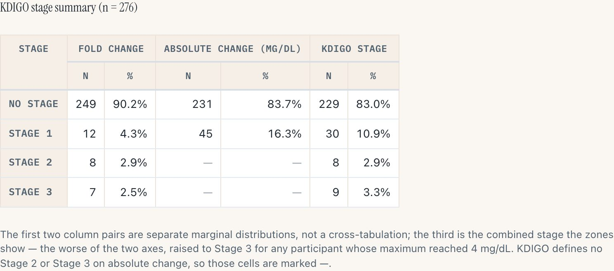
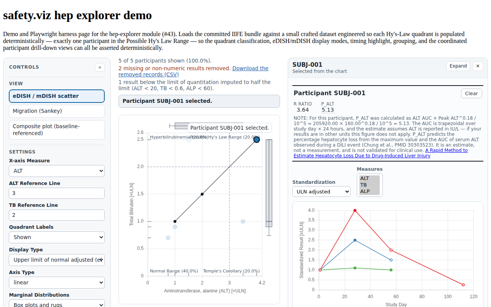
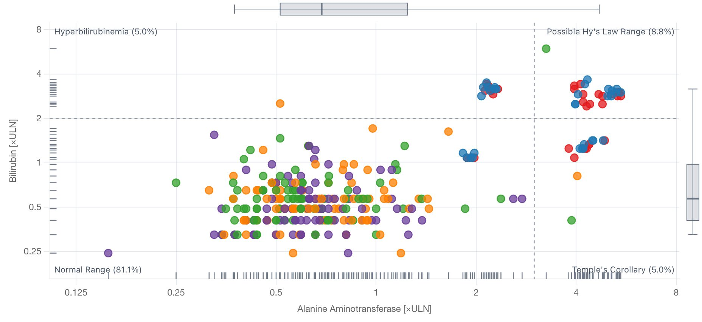
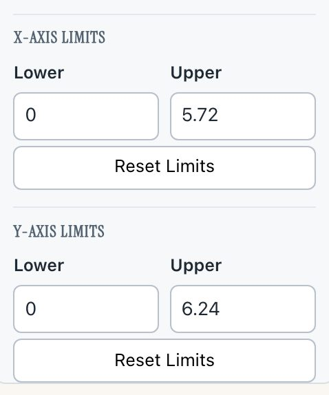
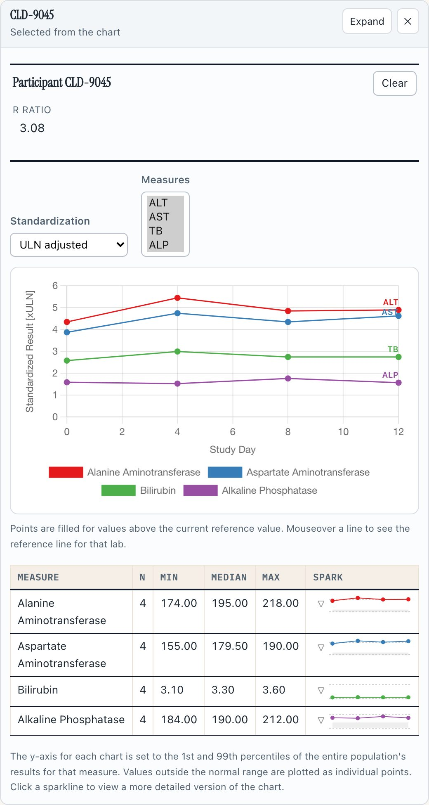

safety.viz release review 2026-08-14
The gallery crosses into nephrotoxicity, and the Hepatic Safety Explorer gets back the feature the original renderer was best known for. Each section below is a line on what changed, why it matters when you are reading a study, a capture of it running, and a way into the live demo to check it yourself. Every capture was taken on 14 August from the release candidate — the build this cut promotes, the same bytes the dev site deploys.
5 PRs, all merged to dev 1 new renderer — 12 in the gallery 1 178 unit + 236 browser tests promotes dev → main via sv#124
The twelfth renderer, ported from SafetyGraphics/nepExplorer: KDIGO acute-kidney-injury screening as one point per participant, at their maximum post-baseline fold change in serum creatinine against their maximum absolute change, over the KDIGO stage zones. Kidney sibling of the eDISH scatter, on the same shell, the same lifecycle, the same evidence discipline. Design decisions D1–D9 are signed in design #35; Phase 1 implements them.
Stage 1 is the 1.5–2× fold band at any absolute change, plus everything at or above 0.3 mg/dL below 1.5× fold. The unpainted box in the lower left is the one region where both KDIGO criteria are clear — and participants whose creatinine only fell keep their place on the chart below zero rather than being dropped.

1 2 3 4KDIGO's third Stage-3 criterion is a value, not a change: creatinine reaching 4.0 mg/dL. That cannot be a region of a change-vs-change plane, so it is a property of the mark instead (design D5) — larger, triangular, with its own tooltip line.

The case the mark exists for. AKI-9027 starts at 2.71 mg/dL — a high chronic-kidney-disease baseline — and rises 1.7×: Stage 1 on either change axis. But the maximum reached 4.6 mg/dL, so the participant is Stage 3 by the absolute-value rule, and the tooltip says which rule staged them. In the original renderer this participant would read as mild.

The first two column pairs are separate marginal distributions — the shape the R app's table has; the third is the combined stage the zones show. The absolute-change column's Stage 2 and 3 cells are dashes, not zeroes: KDIGO defines no such stages on absolute change, and a zero would read as "nobody qualified".
Why it matters
This is the portfolio's first renal display, and it ships with the data honesty the KDIGO criteria demand: per-record mg/dL ↔ µmol/L unit resolution (one unresolvable record suppresses absolute-change staging chart-wide rather than guessing), a baseline fallback that is counted and disclosed, and every dropped record downloadable with its reason.
It ships Experimental on purpose: the staging ladder is defensible from the KDIGO criteria and from the source's own chart geometry, but it should be confirmed by someone who owns the clinical content before the evidence page claims KDIGO conformance — that call is flagged in sv#121. Phase 2 (profile drill-down, CKD-EPI eGFR) is scoped in the design and unfiled.
Try it
Open the Nephrotoxicity ExplorerThe animation the original hep-explorer was best known for, restored to the eDISH scatter. Press play and every participant walks their own lab trajectory against the Hy's-Law quadrants, trails accumulating behind the moving points; the population's story stops being a single peak-values snapshot.
7 s clip · press play
Four drawing rules are ported verbatim from the original: a point sits on its most recent result at or before the shown day, holds at its first result before it is measured at all, shrinks outside its own measured span, and is not drawn before its participant's first record. At the end of the clip the slider is scrubbed — the playback yields to the reader rather than fighting for the day. That behaviour is HEP-ANIM-008, and it has its own story: it shipped implemented but unevidenced, and sv#119 closed that gap with a named browser test — under the done-gate, a requirement row is only as good as the evidence it points at.
Why it matters
A peak-values scatter cannot distinguish a participant who drifted into the Hy's-Law quadrant over twelve weeks from one who arrived in three days. Watching the walk — and the trail it leaves — is the fastest read of temporal pattern the display offers, and it was the loudest gap left from the v1.3 port.
On the public demo the day axis runs over the visit sequence, because the vendored dataset carries no study-day column — the label says so. With real ADY data the same control plays calendar study days.
Try it
Open hep-explorer, switch View to the eDISH scatterWith calculate_palt: true, the participant profile header carries an estimate of the fraction of hepatocytes lost — the quantitative companion to the eDISH read — with the arithmetic behind it shown, not just the figure.

The canonical evidence capture (HEP-PALT-001, Linux CI environment). This one is not on the public demo, deliberately: the estimate integrates ALT over study day × 24 hours, and the demo dataset's visit sequence cannot stand in for that clock — so the demo leaves it off rather than showing a number built on the wrong axis. The evidence page carries the assertions (HEP-PALT-001…003), including that it stays off unless the caller opts in.
Why it matters
It is the first quantitative injury estimate in the portfolio, and its gating is the point: unit and sampling assumptions belong to the data owner, so the module refuses to guess them by default. The EX exposure half of sv#49 stays open for a dataset that can feed it.
Try it
Read the HEP-PALT evidence rowsHEP-PALT-001–003 and open the capture.calculate_palt: true with real study-day data.Four items migrated from the upstream backlog close out the v1.2 UI-polish list (sv#54): a log-base choice, manual axis limits, full measure names in the drill-down, and the R/nR primary sources in the Clinical guide.

Axis Type log now offers a Log Base picker: log10 (decades) or log2 (doublings). Here the gridlines sit on every doubling — 0.25 / 0.5 / 1 / 2 / 4 / 8 ×ULN. The base is a tick generator, not a transform: log positions are base-independent, so choosing doublings moves the gridlines and never the cloud. A base whose powers cannot span the domain is not offered.

Manual limits on both eDISH axes, and the boxes arrive filled with the limit actually in force — not blank. Type an upper bound and that axis follows while the other keeps re-deriving; Reset Limits hands one axis back to auto; changing the measure or Display Type returns both, since a limit typed for ALT ×ULN says nothing about ALP.

The drill-down names its measures in full. Click a point, and the rail's labs chart legend reads Alanine Aminotransferase, not ALT — while each line still carries its short key at its own last point, in the line's colour, pushed apart when two lines end at the same height. The Clinical guide now links the R / nR primary sources and states the nR formula rather than only naming it.
Why it matters
Each item is small; together they close the list, and sv#54 — open since the v1.2 port — closes with them. The upstream asks these migrate from (#112, #238, #290, #335) date back years in the original repo.
Try it
Open hep-explorer on the eDISH viewHEP-PALT-001), because the public demo deliberately leaves that estimate off.adbds extract, now carrying two injected cohorts: 24 crafted CLD-* Hy's-Law cases for the hepatic views and 46 synthetic AKI-* participants for the KDIGO zones (design #35 D8). The nep demo plots 276 participants and reports 24 it could not plot, with reasons.HEP-ANIM-008 evidence (sv#119) — the scrub-stops-playback rule gains its named test; the clip above shows the behaviour itself.dist/safety.viz-1.5.0/ frozen back to the tag's bytes, dist/safety.viz-1.6.0/ vendored, fixtures repointed.evidence.json was refreshed on the canonical Linux environment on 14 August as part of the nep-explorer landing.Where this fits
This page is the review surface for RC sv#124 (dev → main). The user-facing release notes live in that PR's body and publish on the v1.6.0 tag when it merges — on your approval, via the attested lane, and not before.
The rest of the candidate